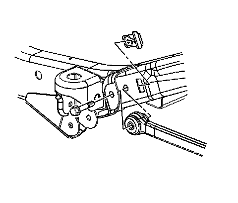
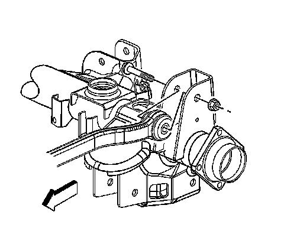

Rear Axle Upper Control Arm Replacement
Rear Axle Upper Control Arm Replacement
Removal Procedure
1. Raise and support the vehicle. Refer to Lifting and Jacking the Vehicle.
2. Disconnect the electronic suspension control (ESC) sensor, if equipped.

3. Remove the upper control arm retaining nut and bolt from the frame bracket.

4. Remove the upper control arm retaining nut and bolt from the axle bracket.
5. Remove the upper control arm.
Installation Procedure
1. Install the upper control arm.
2. Install the upper control arm retaining bolt and nut to the axle bracket.
3. Install the upper control arm retaining bolt to the frame bracket.
Notice: Refer to Fastener Notice.
Important: Do not tighten the nuts unless the suspension is at the curb height position.
4. Install the upper control arm retaining nut.
Tighten the upper control arm retaining bolts to 160 N.m (118 lb ft).
5. Connect the ESC sensor, if equipped.
6. Lower the vehicle.